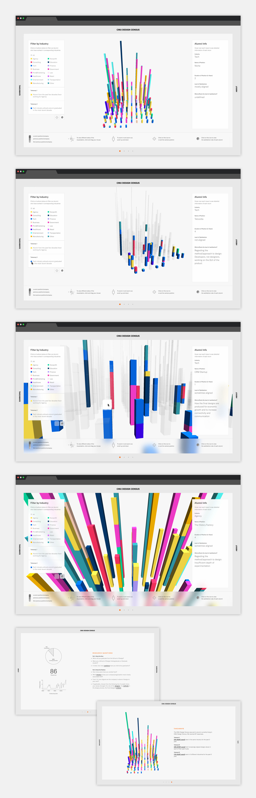
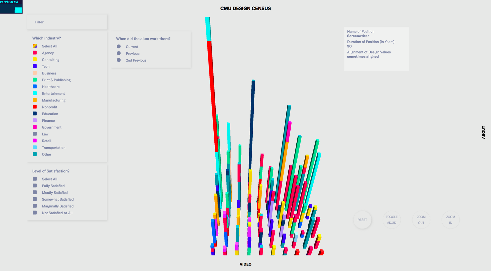
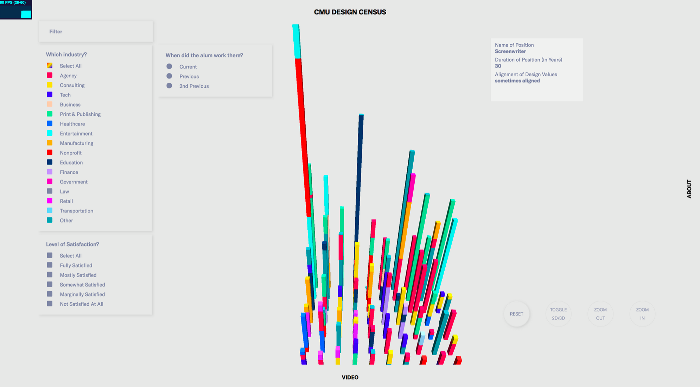

CMU Design Census
Website showing career paths of CMU Design graduates
Overview
Building off of our AIGA Design Census project, my group (Faith Kaufman, Deborah Lee, Steven Ji, Jessie Headrick) and I collected data on alumni from the Carnegie Mellon School of Design to understand whether or not they "align" with the industries they work in. We visualized our data in a webpage, which can be viewed here.
Surveying & Interpreting Results
We sent out a survey (available here) to alumni residing in New York at the time, asking them about their three most recent job positions, as well as how satisfied they were with the role of designer, the company's design process, and the final product of the design phase. We were able to obtain more quantifiable metrics to use when determining how "aligned" a person is with their occupation and respective industries.
Within our survey, we asked on a scale of 1-5 how aligned a person was with each of the categories (designer, method, product). We then asked them to tell us why or why not they felt satisfied with the job's attitude towards and concept of design.
In total, we received 86 responses from alumni to work with. Our next step was to interpret the data, with each of us taking some time to look for patterns and correlations between industries and levels of satisfaction. Ultimately, we decided that our goal was to present the data in a visual format rather than come to conclusions that could potentially be inferred. From there, we moved to figuring out how to present the data through digital media, and make it interactive for the user to navigate through different levels of information.

Visual Development
From our responses, we felt that we had an understanding of each individual alumnus and how he or she felt about certain design philosophies. As a result, we decided to individualize each person as a cube, and placing them together would create a "city" of designers. Our original concept involved having different faces of cubes to represent their levels of satisfaction with the separate categories, but technical limitations, as well as the desire to simplify our representation of the data, led us down a different route.
For weeks we experimented with different visual styles, for both a motion graphics video as well as the webpage that would host the survey data. In the end, we developed a visualization tool that could filter out different industries, allowing the user to specify what he or she wanted to learn more about. We also created pages that talked about different patterns we noticed, and showed potential takeaways that could be found.


 

Final Thoughts
Overall, our group was satisfied with our final deliverable considering the time we were given. Future steps for this project involve making it responsive for multiple platforms, and cleaning up interactions with the visual tool. Ultimately, I learned a lot about the perils of survey creation, data interpretation, web design, as well as visual development skills, and I hope I can apply what I learned about data visualization to future projects I come across!